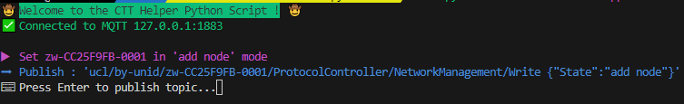

Z-Wave Certification scripts
These scripts are meant to help you to self-certify the command class using CTT.
Configuration

You must provide the main Z-Wave controller in the config.ini file. You can find it in the Dev-Gui of unify. It should start with a zw and end with -0001 You only have to specify the NetworkID of the Unid (without -0001). In our example the config file should look like :
[ZWave]
CTTControllerNetworkID=zw-00000000
You also need to install the requirements : pip3 install -r requirements.txt (only once). Feel free to use a virtualenv if needed.
Usage
Run the script associated with your command class (e.g python3 command_classes/sound_switch.py).
The first step is to include the tested device. The script will make the controller into Add Node mode and then look for the included node to send the command to it directly. All you do is press enter to send the MQTT commands !

For each action you’ll see :
An action description (purple)
The published topic (blue)
A message that prompt you to press enter to publish the topic